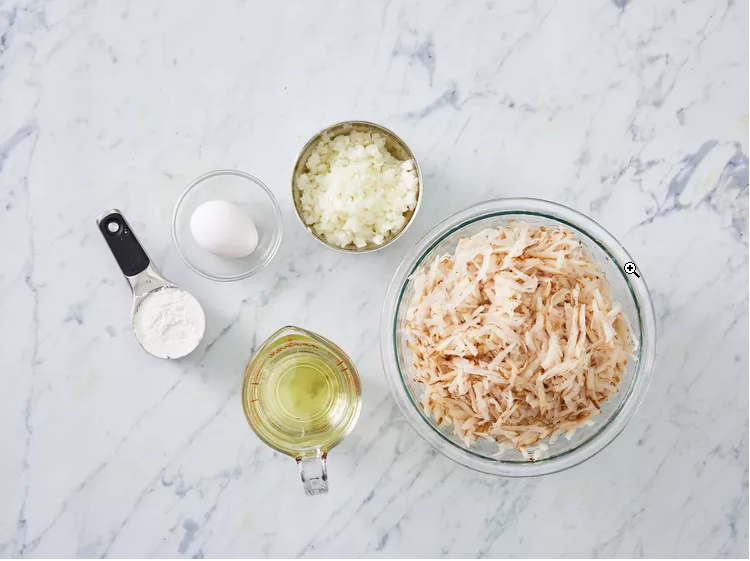
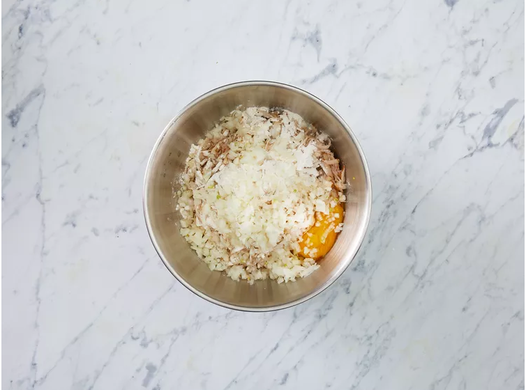
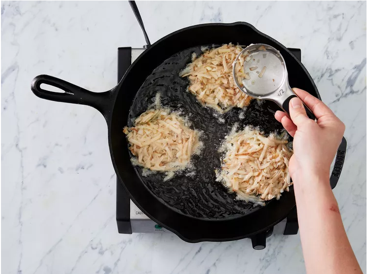
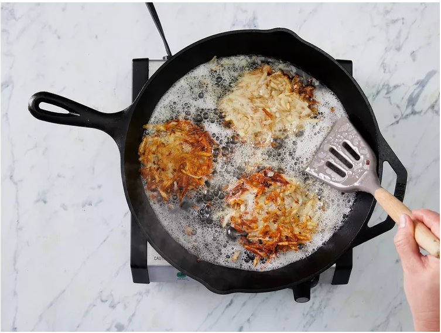
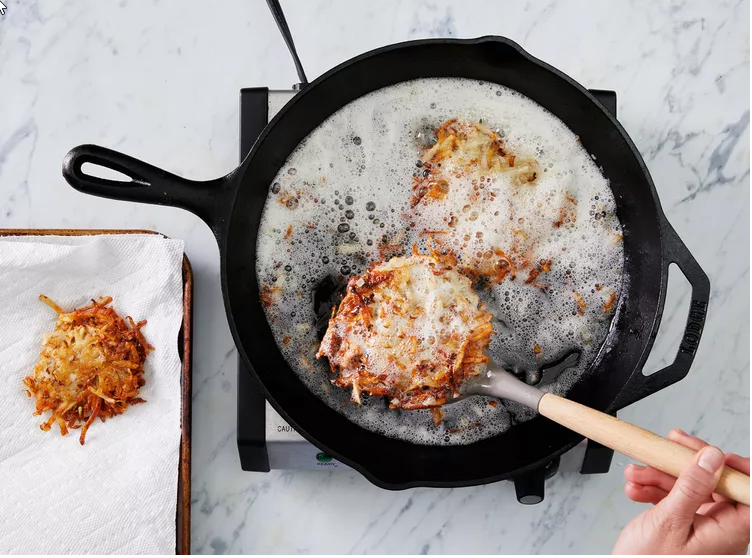

Homemade Crispy Hash Browns

Description
Good, old-fashioned, restaurant-style hash browns. Perfect with hot pepper
sauce and ketchup!
Ingredients
- 2 medium russet potatoes, shredded
- ½ medium onion, finely chopped
- ¼ cup all-purpose flour
- 1 egg
- 1 cup oil for frying, or as needed
- salt and pepper to taste
Steps
-
Step 1:Gather all ingredients.

-
Step 2:Rinse shredded potatoes until water is clear,
then drain and squeeze dry.
-
Step 3:Place shreds in a bowl and mix in the onion,
flour, and egg until evenly distributed.

-
Step 4:Heat about 1/4 inch of oil in a large heavy
skillet over medium-high heat. When oil is sizzling hot, place potatoes
into the pan in a 1/2 inch thick layer. Cover the whole bottom of the
pan, or make separate piles like pancakes.

-
Step 5:Cook until nicely browned on the bottom, then
flip over and brown on the other side. It should take at least 5 minutes
per side. If you are cooking them in one big piece, it can be cut into
quarters for easier flipping.

-
Step 6:Remove from pan, and drain on paper towels.
Season with salt and pepper and serve immediately.

- Step 7:Serve hot and enjoy!